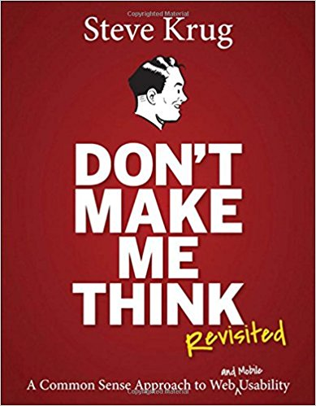

Like most people, I appreciate when things are simple and easy to understand. Tasks that require minimal effort are always preferred, especially in a world where layers of complexity are being added to everything whether it’s in technology, or through human interactions.
However, when it comes to UX, it’s easy to forget that something that may seem obvious to the designer, may not be as clear to the eventual user. Using fun words to spice up the header bar might make your website look more interesting, but it also might confuse your user enough to have them click out. Don’t Make Me Think reminded me of just that. Most users are on your website to achieve something and they want it to be easy and quick. The word satisficing especially stood out to me, as when I read the definition, it was an action that I acknowledged participating when I browsed the web.
When it comes to conventions in web design, I was torn. As creatives, we are often taught to shake up the norm, and try new things so that we don’t blend in. However, I recognize that certain conventions are necessary for website design. Looking at the example of the Japanese site, it reminded me of times when I had landed on a site in a language I didn’t understand, and I managed to figure out where the “change language” button was through mere experience from past sites. Even when the sites didn’t have other language options, I could usually figure out where the information was situated through context and my knowledge of how most websites are set up. It definitely hammered in how important it can be to stick to those “rules”.
Don’t Make Me Think helped put us back in the user’s shoes when designing for websites. After all, we are all web surfers as well, and we have experienced confusing and unclear sites before. When designing and coding, we need to think about how we as a user would want to interact with the site and use that a guide.
What are your thoughts on this book? Let me know in your comments below.
Unrelated, but if you want to check out a bio for Chewie, click here.